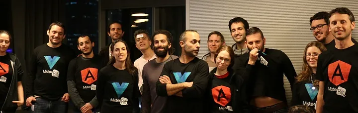
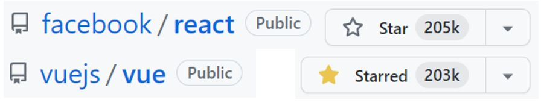

ע
ולם פיתוח הפרונטאנד עבר בשני העשורים האחרונים מהפך דרמטי כשהדפדפן וטכנולוגיות האינטרנט הפכו להיות חזקות יותר ויותר ומאפשרות כיום לראשונה בהיסטוריה לפתח פתרון אחד שיעבוד על כלל הפלטפורמות – משעונים ועד טלויזיות חכמות, מחשבים מסוגים שונים וטלפונים ניידים.
את האפליקציות המודרניות כותבים היום באמצעות שימוש בפריימוורק – שזה מעין ספרית קוד תשתיתית שנעזרים בה על מנת להתקדם מהר יותר ולהתמקד באתגר של המוצר הספציפי ולא באתגרים הבסיסיים שמשותפים להרבה אפליקציות.
מבחינה הסטורית היו לא מעט ספריות, כיום יש שלוש ספריות פרונטאנד מרכזיות:
React, Vue and Angular
נקדיש כמה מילים לכל אחת:
אנגולר – פריימוורק מורכב מבית גוגל, מתאים לצוותים גדולים, ארגונים גדולים מערכות גדולות. נמצא בשימוש של גופים כמו בנקים וחברות אנטרפייז. דורש מומחיות יחסית גבוהה ובעל עקומת למידה תלולה.
ריאקט – ספרית הפרונט הפופולרית בעולם מבית ריאקט, עברה כמה וכמה מהפכים, בסך הכל ספריה מינימליסטית ובדרך כלל יש להוסיף כמה ספריות נוספות בכדי שהתשתית תהיה מספקת.
VUE – פריימוורק קטן ועוצמתי, מכיל פתרון מובנה לצרכי פיתוח רבים, נבחר גם בארץ ע"י סטרטאפים וחברות גדולות, כולל צה"ל-ממר"ם
בשלושת הפריימוורקים יש הרבה מין המשותף, לכן אחרי שמכירים ומתנסים לעומק באחד מהם, ניתן ללמוד את האחרים בזמן קצר. בקורס אצלינו בקודינג אקדמי, אנו מלמדים את שלושת הפריימוורקים בכדי להרחיב ככל שניתן את מגוון המשרות שניתן להתקבל אליהם.
חברת מיסטרביט מעסיקה עשרות רבות של מתכנתי פולסטאק העוסקים בפיתוח פרוייקטי תוכנה בפרימוורקים השונים. חברות רבות נעזרות בארכיטקטים של מיסטרביט לגבי בחירת פריימוורקים וכלים, ארכיטקטורת תוכנה מודרנית – סקייל, סקיוריטי, פרפורמנס, מיגרציה, מיקרו-פרונטאנדס וכו

בואו נסתכל על המצב הנוכחי
ספריית ריאקט ממשיכה להיות הבחירה הפופולרית ביותר עבור ספריית FRONTEND, היא אף עוקפת מחדש את VUE בכמות הסטארים בגיטהאב:

אם הסתקרנת, ניתן לראות את המצב הנוכחי כאן:
React |
Vue
ריאקט ממשיכה להתפתח ולערוך על עצמה אופטימיזציות, היא גם מציגה רעיונות חדשים-ישנים כגון React Server Components, ניתן לקרוא על זה
כאן
אנגולר מתקדמת וגם משילה מעצמה אלמנטים שמכבידים על הפרייוורק האימתני (stand-alone-components), היא נבחרת כיום בעיקר למערכות אנטרפרייז עם צוותים גדולים מאוד.
ניתן לקרוא על זה
כאן
אנקדוטה מעניינת - ידעת שבכל הצוות של ריאקט, יש רק מתכנת אחד עם תואר במדעי המחשב?
מאמרים נוספים
פרונטאנד - בקאנד ומה שביניהם
בעברי הובלתי את קורס התכנות של ממר"ם מספר שנים והכשרתי מאז אלפי
מתכנתים.
הרבה אנשים שואלים אותי איך כדאי להכנס לעולם הפיתוח וההייטק, ואני עונה שהכי כדאי ללמוד את המקצוע
המבוקש
ביותר בתעשיה כיום - Full Stack Developer...
למאמר המלא
האם תואר במדעי המחשב נדרש כדי להשתלב כמתכנתים בהייטק
בעבר, תואר במדעי המחשב היה תנאי די הכרחי על מנת להשתלב כמתכנת (למעט יוצאי ממר"ם שנחטפו לעבודה כך
או
כך) אך המציאות השתנתה וכיום במיטב החברות, התואר הפך להיות מרכיב זניח ביחס לאלמנטים אחרים כגון...
למאמר המלא
יש ChatGPT - עדיין כדאי ללמוד תכנות ב-2023?
למידת מכונה (Machine Learning - לעיתים מכונה גם למידה חישובית) היא תחום במדעי המחשב העוסק בפיתוח
אלגוריתמים המיועדים לאפשר למחשב ללמוד מתוך דוגמאות, ולבצע משימות חישוביות בהן התכנות הקלאסי אינו
אפשרי...
למאמר המלא